For parents and teachers
What Digit Stack does, and how
Digit Stack is a keyboard-first game for practising addition, subtraction, multiplication and division with written methods, set by school year from Year 1 to Year 7. Content and layouts follow the national curriculum in England and its Mathematics Appendix 1.
It runs in the browser. There is no account, nothing to install, no adverts, and the game sends nothing anywhere: progress stays in the browser on the device.
Play Digit Stack1. How a child moves up
On the start screen the child, or you, sets the school year with the arrow keys. There are four areas: divide, multiply, add and subtract. Each area starts at the school year and moves up on its own when its year check is passed, so a child can be ahead in one area without being pushed on in the others.
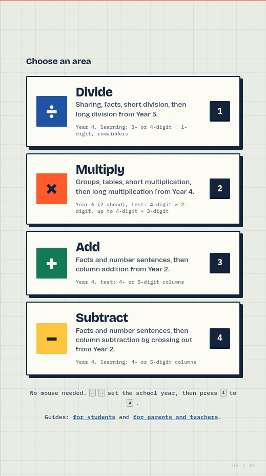
2. Learn, then test
Each area and year has two stages, and the game moves between them by itself.
- Learn. The game guides the child one box at a time, with a prompt for each step. A wrong digit gets an explanation, and the child corrects it to finish the problem.
- Test. Every box is open and there are no prompts. The child moves between boxes with the arrow keys and hands in with Enter. Only the answer is marked.
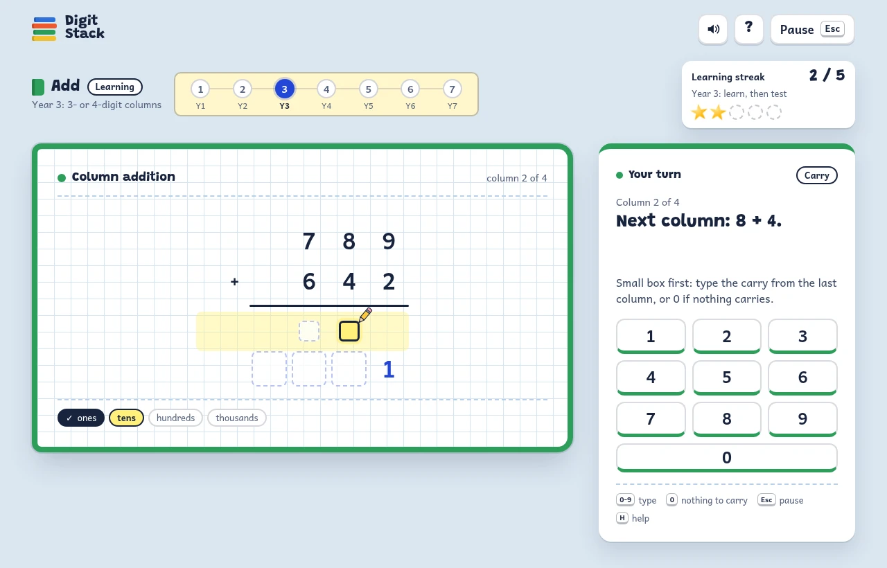
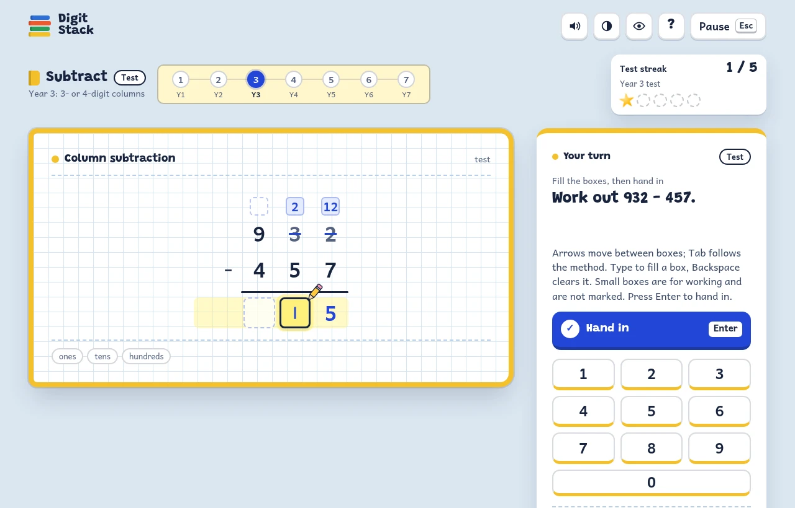
Each stage needs a number of clean rounds in a row, meaning rounds with no mistakes. Any mistake sets the count back to 0. The number depends on how long that area's rounds are in that year: 10 when a round averages under 5 key presses, 5 for 5 to 15, and 3 above 15. Learning and the test need the same number, so passing a year takes at least twice the figure below.
| Year | Divide | Multiply | Add | Subtract |
|---|---|---|---|---|
| 1 | 10 | 10 | 10 | 10 |
| 2 | 10 | 10 | 10 | 10 |
| 3 | 10 | 5 | 5 | 5 |
| 4 | 5 | 5 | 5 | 5 |
| 5 | 5 | 3 | 5 | 5 |
| 6 | 3 | 3 | 5 | 5 |
| 7 | 3 | 3 | 5 | 5 |
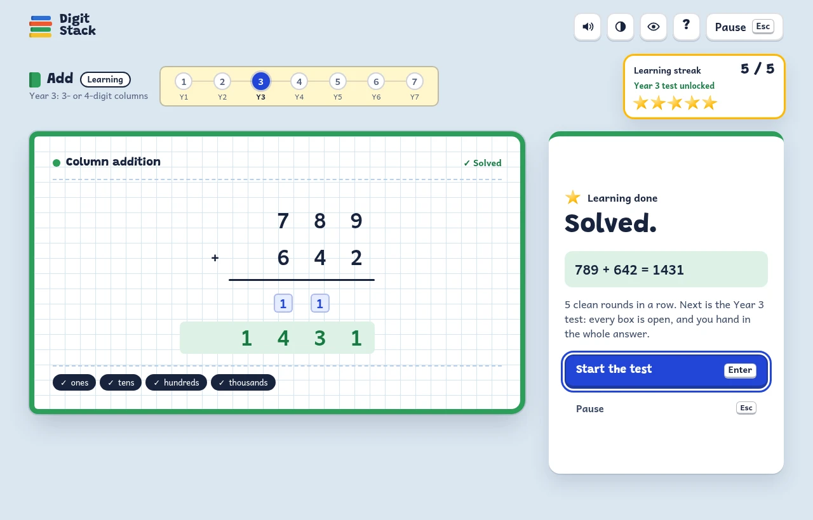
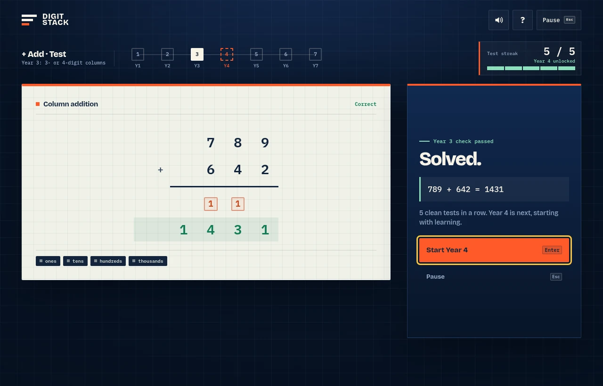
3. What each year covers
| Year | Age | Multiply | Divide | Add and subtract |
|---|---|---|---|---|
| 1 | 5-6 | Rows of 2, 5 or 10 dots up to 100; 2, 5, 10 tables | Sharing and grouping; dividing by 2, 5, 10 | Facts to 20; 2-digit and 1s, 10s or 2-digit; three 1-digit numbers; missing numbers such as 7 = ? − 9 |
| 2 | 6-7 | 2, 3, 4, 5, 8, 10 tables; missing numbers | Same tables; missing numbers | 3-digit and 1s, 10s or 100s; missing numbers; 2- and 3-digit columns |
| 3 | 7-8 | 2- or 3-digit × 1-digit | 2- or 3-digit ÷ 1-digit, exact | 3- and 4-digit columns |
| 4 | 8-9 | 3- or 4-digit × 1-digit; 2-digit × 2-digit | 3- or 4-digit ÷ 1-digit with remainders | 4- and 5-digit columns |
| 5 | 9-10 | 3- or 4-digit × 2-digit | 4-digit ÷ 1-digit; 3- or 4-digit ÷ 2-digit | 5- and 6-digit columns; below zero with small numbers |
| 6 | 10-11 | 4-digit × 2-digit; 3- or 4-digit × 3-digit | 4- or 5-digit ÷ 2-digit | 6-digit columns; below zero up to 100 |
| 7 | 11-12 | 4- or 5-digit × 3-digit | 5-digit ÷ 2-digit; 4-digit ÷ 3-digit | 6- and 7-digit columns; adding and subtracting negatives |
About 1 in 4 column subtractions exchange across a zero. From Year 5, about 1 in 3 add and subtract problems are number sentences with negative numbers in them. Some of their answers are below zero and some are not, so the child decides the sign each time.
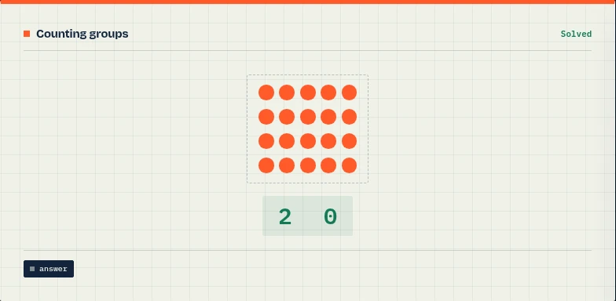
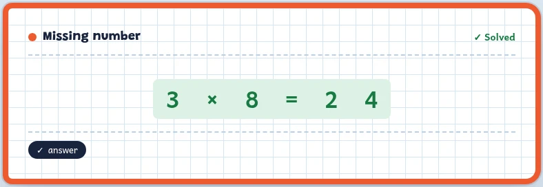
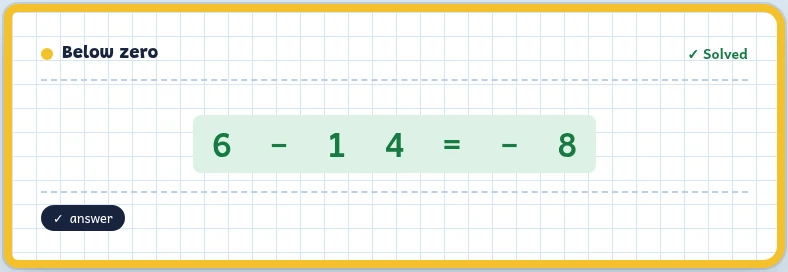
4. Pitched for strong pupils
Each year here is harder than the standard programme for that year: it takes the year's own content at the top of its range, adds the next year's methods, and adds missing-number problems in Years 1 and 2. The national curriculum expects most pupils to move through the programme at broadly the same pace, and says:
“Pupils who grasp concepts rapidly should be challenged through being offered rich and sophisticated problems before any acceleration through new content.”
Mathematics programmes of study, key stages 1 and 2, Department for Education
If a child needs the standard pace, set the school year one lower than their actual year.
5. The written methods
Each method follows Mathematics Appendix 1. The examples below are the appendix's own examples, finished in the game. Appendix 1 notes that “the exact position of intermediate calculations (superscript and subscript digits) will vary depending on the method and format used”. Digit Stack puts each carry in a small box just above the row it goes into; the appendix's examples write addition and short multiplication carries under the answer line.
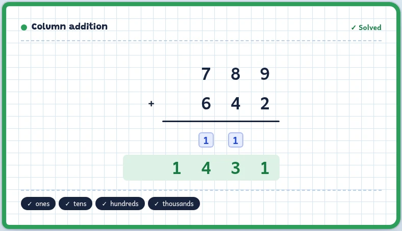
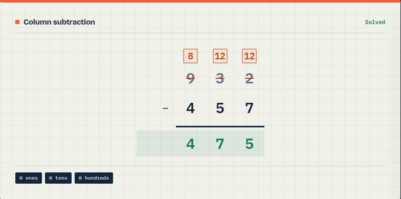
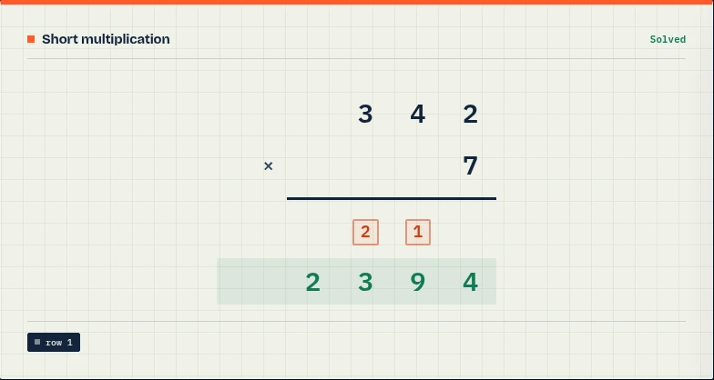
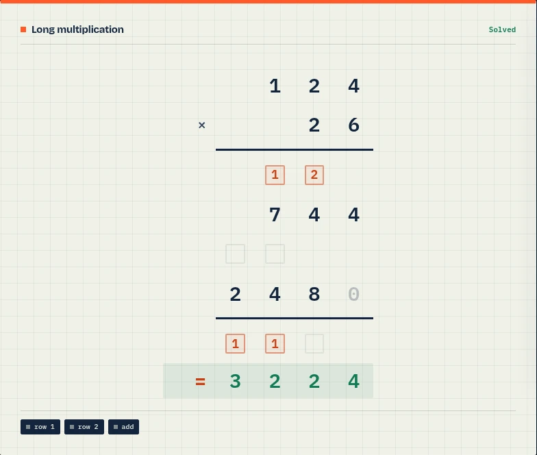
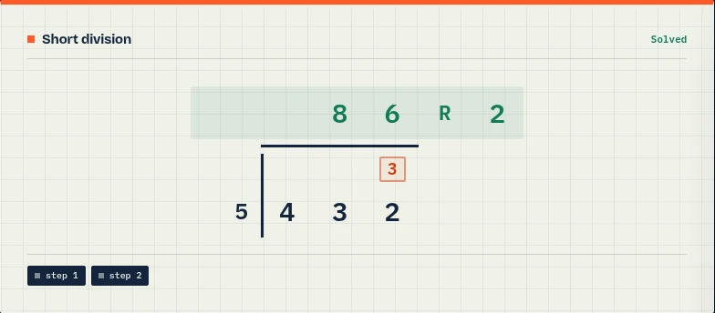
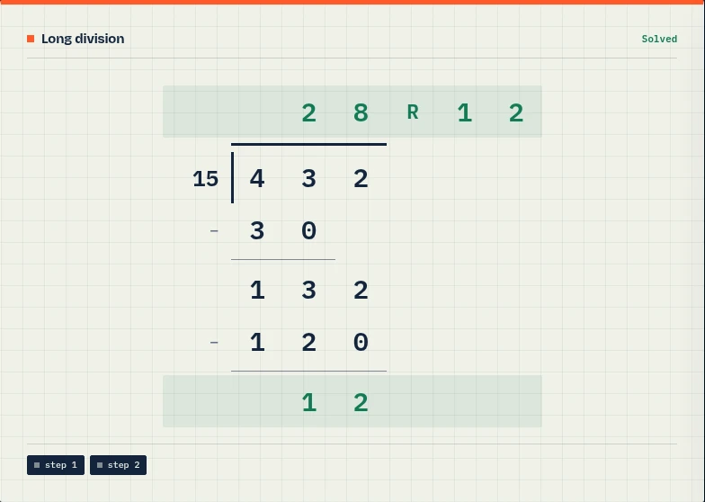
The game uses the word “exchange”, not “borrow”. Long division brings each digit down, as in the appendix's third example, so 15 × 2 = 30 is written under 43; the appendix's first example writes 300 under 432 instead. Remainders are written after R.
6. Why every small box needs a digit
In learning, the cursor stops at every small box, whether or not anything carries. The child types the carry, the amount left over in short division, or 1 to exchange a ten in subtraction, or 0 if there is none. A 0 is not written on the sheet; the box turns grey.
The stop happens in the same place with the same wording either way, so the stop itself does not tell the child whether something carries. They have to work it out each time. A wrong 0 is a mistake like any other.
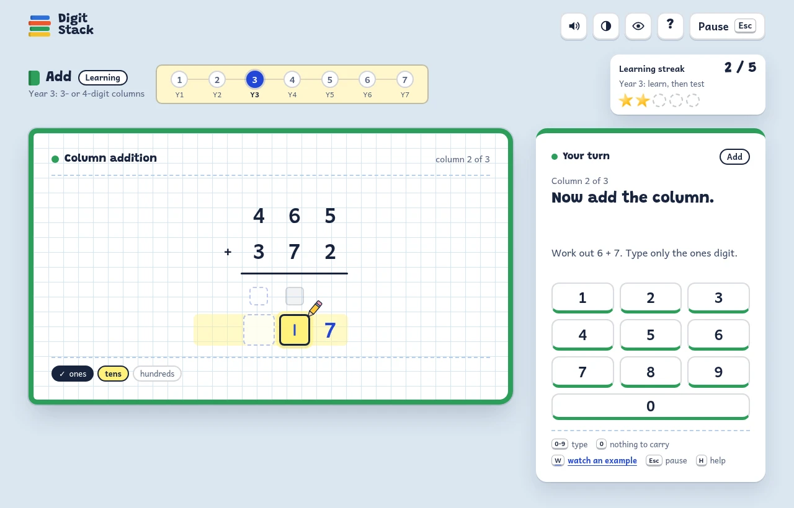
7. Mistakes and marking
In learning
A wrong digit shows why and what the box needs. The child corrects it and finishes the problem, but the round is not clean, so the count goes back to 0. Afterwards Enter tries the same problem again and N starts a new one.
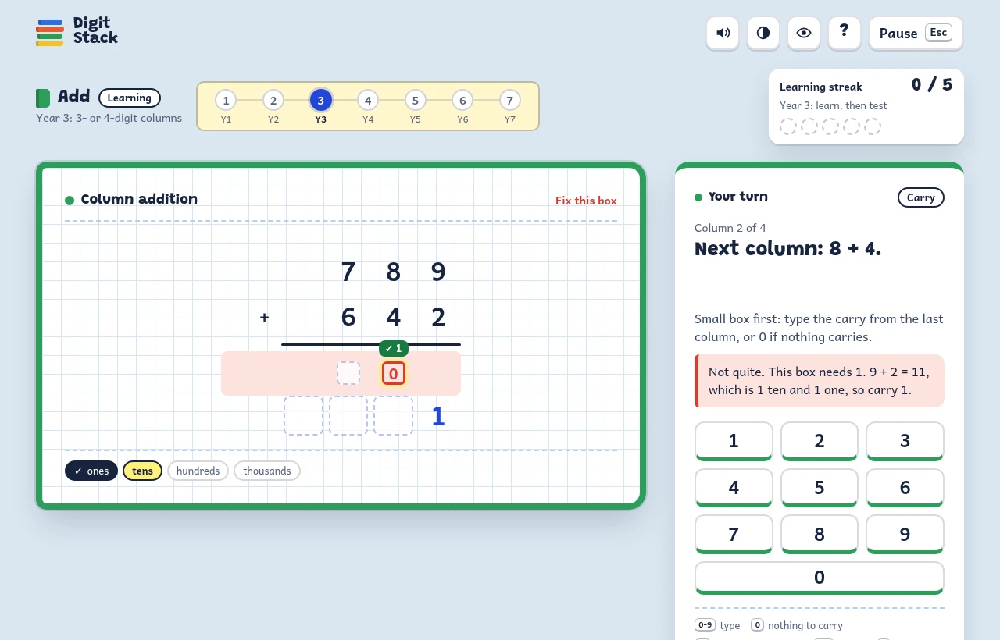
In tests
Only the answer boxes are marked. Carries, exchanges, left-overs and partial products are the child's own working and are not marked. A wrong answer marks each answer box right or wrong, shows the proper answer and the full working, sets the count to 0, and moves on to the next problem; there is no retry.
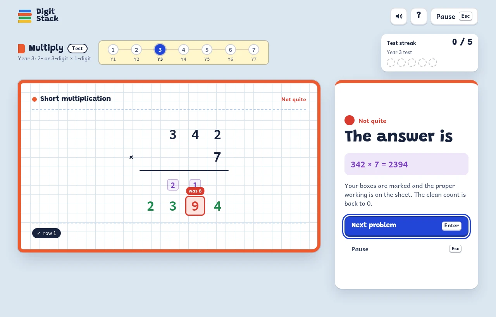
8. Saving and privacy
Progress is saved in the browser’s storage on the device: the school year, the years learned and passed in each area, each area’s clean count, and the round in progress with every box typed so far. The game can be closed at any point and opens again where it stopped. A mistake made before closing still counts, and a finished round is already counted.
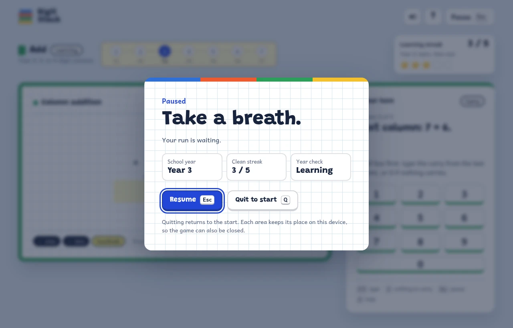
- Each browser keeps its own progress. Two children on one computer need two browser profiles.
- Clearing this site’s data in the browser resets everything.
- If the browser blocks storage, the start screen says that it is not saving.
- The game sends nothing anywhere. It loads only its own files: no analytics, no adverts, no outside scripts. It is hosted on GitHub Pages, and GitHub’s own terms and privacy statement cover visits to the page.
9. Current limits
- Number only. There are no fractions, decimals, percentages, measurement, geometry or statistics.
- Whole numbers in multiplication and division. Negative numbers appear only in add and subtract, from Year 5, as number sentences.
- The layout gives some hints. Answer rows are drawn to the length of the answer, so the number of boxes can show, for example, that the last column carries or that a subtraction answer is short. In division, there is no quotient box over a first digit the divisor does not go into, and the R box appears only when there is a remainder. In long multiplication the place-holder 0 is already written in.
- One learner per browser. There are no accounts and no class reports.
10. Using it at home or at school
- It is tested in Google Chrome at computer and phone sizes. A physical keyboard is best; on tablets and phones the on-screen number keys can be tapped instead.
- To move a child to a different year, set the school year on the start screen. Areas already ahead stay ahead.
- The student guide explains the game in a child’s words: How to play Digit Stack.
- The source code is public. Downloading it and opening
index.htmlin a browser runs the game without the internet.
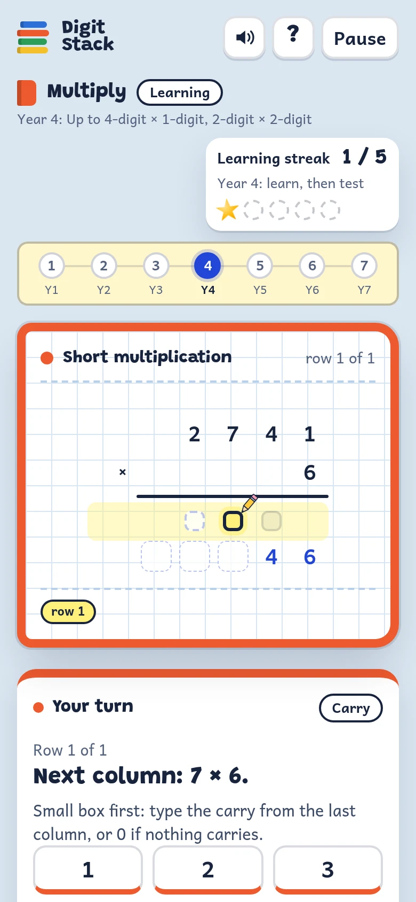
11. Sources
- Department for Education, National curriculum in England: mathematics programmes of study.
- Department for Education, Mathematics Appendix 1: examples of formal written methods for addition, subtraction, multiplication and division (PDF).